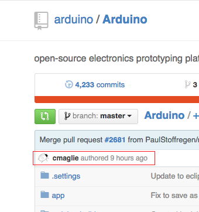
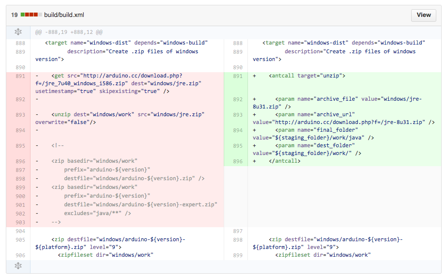

Introduction to Version Control System (VCS)
Objective of today's talk
Appreciation of version revisions
Storage vs collaboration: Branching and Merging
Types of VCS: Similarities and Differences
Distributed eg. GIT
VersionControl:
ADVANTAGES
Work parallel
Update project to the latest version
Backtrack
List changes and their details
Version control is a safety net
VersionControl:
DISADVANTAGES
Moderate learning curve
Ability to work with Command Line Interfaces (CLI)
Advantages
Working
concurrently
Have the Latest version
$ git pull git@github.com:arduino/Arduino.git

Advantages Backtracking

LIVE DEMO
Advantages: A safety net
Dropbox only saves up to 5 revisions from the latest version
No save messages (end up relying on file names)
works even if you move the file to different folder and rename the file
Branching and merging
Available VCSs
SVN
Mercurial
GIT
GIT Distributed VCSs
Gives you the ability to work concurrently and prevents locking.
Each user has a full copy of the repository
Git is not Github
Git is not Github
Github serves many purposes
central dump
Wikipedia
Issues Submission
Friendly for code sharing esp open source projects and collaborations (FORKING)